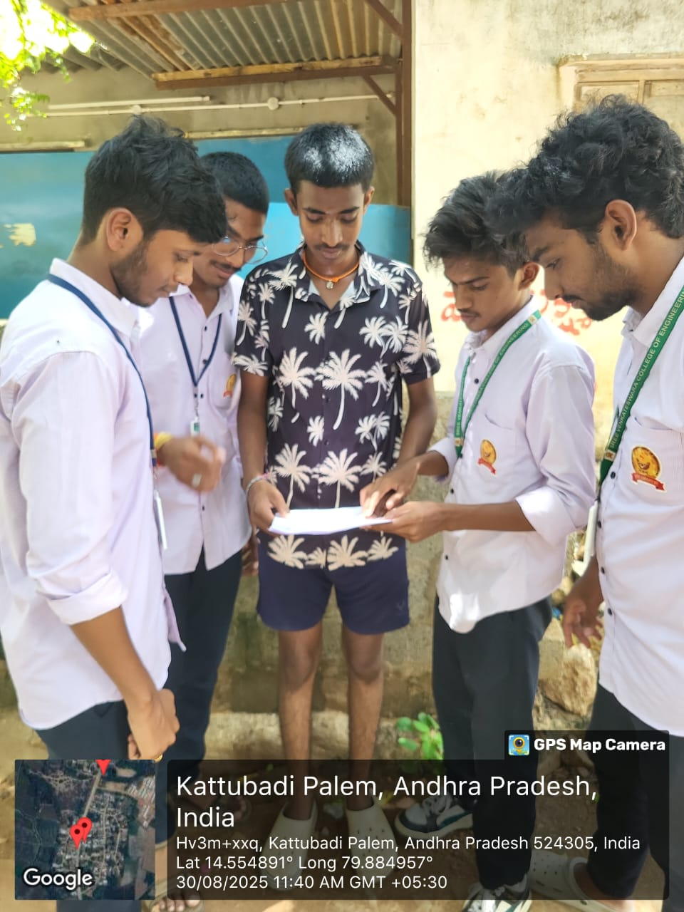
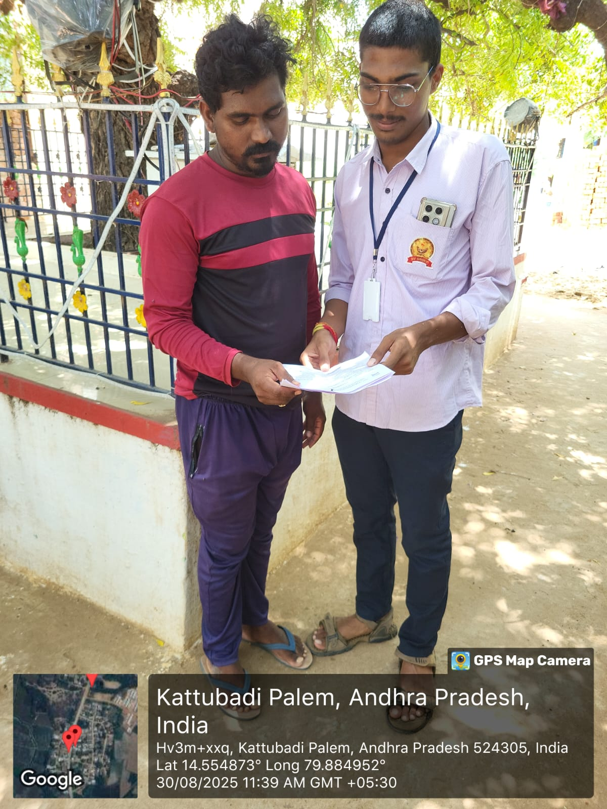

WEEKLY REPORT
WEEK – 6 (From 17-06-24 to 22-06-24)
Objective: Survey on the Range of Awareness of Internet Usage in Village
Detailed Report
Day 1: Introduction and Setup
- Orientation session with village leaders and residents.
- Installation of Wi-Fi hotspots and computer equipment in the community center.
- Introduction to basic computer operations and internet usage.
Day 2: Basic Digital Literacy Training
- Training sessions on using computers, navigating the internet, and creating email accounts.
- Hands-on practice with trainer guidance.
- Introduction to internet safety and responsible use.
Day 3: Educational Resources and E-Learning Platforms
- Demonstrations of e-learning platforms (Khan Academy, Coursera, etc.).
- Guidance on accessing and using online educational materials.
- Creating user accounts for continued learning.
Day 4: Practical Applications and Skill Development
- Workshops on practical skills like digital marketing and online farming techniques.
- Examples showing how the internet improves productivity and skills.
- Interactive Q&A sessions to clarify participant doubts.
Day 5: Collaborative Projects and Peer Learning
- Group projects using online tools (blogs, e-markets, etc.).
- Peer learning sessions with experienced participants guiding others.
- Sharing success stories and project outcomes.
Day 6: Evaluation and Future Planning
- Feedback collection and analysis of learning outcomes.
- Discussion of areas for improvement and future goals.
- Formation of a digital committee for continuous internet education.

